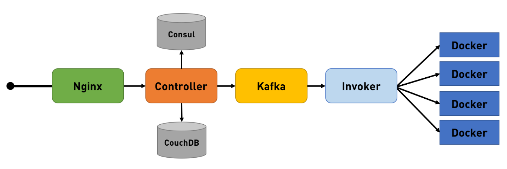

Solução De Aplicação Nas Nuvens
{width="5.905555555555556in" height="3.3243055555555556in"}
Solução de aplicação nas nuvens
 {width="1.0416666666666667in" height="1.0416666666666667in"}
{width="1.0416666666666667in" height="1.0416666666666667in"}
Desenvolvedor Java Sênior na Develcode
17 de março de 2024
Apache OpenWhisk é uma plataforma serverless de código aberto que executa funções em resposta a eventos em qualquer escala. Ela gerencia a infraestrutura, servidores e escalabilidade usando contêineres Docker, permitindo que você se concentre em construir aplicativos incríveis e eficientes.
Aqui estão os principais aspectos do Apache OpenWhisk:
1. Execução de Funções (fx): O OpenWhisk permite que você escreva lógica funcional (chamada de Actions) em qualquer linguagem de programação suportada. Essas ações podem ser agendadas dinamicamente e executadas em resposta a eventos associados (por meio de Triggers) de fontes externas (como Feeds) ou de solicitações HTTP.
2. Deploys em Qualquer Lugar: Como o OpenWhisk baseia seus componentes em contêineres, ele oferece suporte a várias opções de implantação, tanto localmente quanto em infraestruturas de nuvem. Isso inclui estruturas populares de contêineres, como Kubernetes, OpenShift e Compose.
3. Suporte a Múltiplas Linguagens: O OpenWhisk suporta várias linguagens, incluindo Go, Java, NodeJS, .NET, PHP, Python, Ruby, Rust, Scala e Swift. Além disso, há um tempo de execução experimental para Deno em desenvolvimento.
4. Integração com Serviços Populares: O OpenWhisk facilita a integração de suas ações com muitos serviços populares usando Packages. Esses pacotes oferecem integrações com serviços como filas de mensagens Kafka, bancos de dados como Cloudant, notificações push de aplicativos móveis, mensagens do Slack e feeds RSS. Você também pode usar o pacote Alarms para agendar a execução de suas ações em horários específicos ou intervalos recorrentes.
5. Composições Ricas: O OpenWhisk permite combinar suas funções em composições ricas. Você pode escrever código em diferentes idiomas, como JavaScript/NodeJS, Swift, Python, Java ou executar lógica personalizada empacotando o código com Docker.
Em resumo, o Apache OpenWhisk oferece uma maneira flexível e escalável de criar aplicativos serverless, permitindo que você se concentre na lógica de negócios e na criação de soluções independentes de nuvem.
Aqui está um exemplo simples de como criar uma ação (ou função) usando o Apache OpenWhisk. Vamos supor que queremos criar uma ação que some dois números:
// Javascript - Arquivo: soma.js
function main(params) {
const { num1, num2 } = params;
if (!num1 || !num2) {
return { error: \'Por favor, forneça os números para somar.\' };
}
const resultado = num1 + num2;
return { resultado };
}
Neste exemplo:
- Criamos uma função chamada main que recebe um objeto params.
- Verificamos se os números num1 e num2 foram fornecidos.
- Se sim, somamos os números e retornamos o resultado.
Para criar essa ação no OpenWhisk, você pode usar o seguinte comando na linha de comando:
wsk action create minha-soma soma.js
Agora, você pode invocar essa ação passando os parâmetros num1 e num2:
wsk action invoke minha-soma --param num1 10 --param num2 20
Isso retornará um objeto JSON com o resultado da soma:
// Arquivo - JSON
{
\"resultado\": 30
}
Lembre-se de que este é apenas um exemplo básico. O OpenWhisk oferece muito mais recursos, como gatilhos, regras e composições, para criar soluções serverless mais complexas.
Para usar o Apache OpenWhisk localmente em um sistema operacional Linux, você pode seguir estas etapas:
1. Instalação do Docker e Docker Compose:
- Certifique-se de ter o Docker instalado em sua máquina. Se ainda não o tiver, instale-o.
- Em seguida, instale o Docker Compose, que é uma ferramenta para definir e executar aplicativos Docker com vários contêineres.
2. Clone o Repositório do OpenWhisk:
- Abra um terminal e execute o seguinte comando para clonar o repositório do OpenWhisk:
git clone https://github.com/apache/openwhisk.git
3. Configuração do Ambiente:
- Navegue para o diretório openwhisk/tools/ubuntu-setup.
- Execute o script de configuração para instalar as dependências necessárias:
cd openwhisk/tools/ubuntu-setup
./all.sh
4. Inicie o OpenWhisk Localmente:
- Execute o seguinte comando para iniciar o OpenWhisk localmente usando o Docker Compose:
docker-compose -f docker-compose.yml -f docker-compose.local.yml up
5. Verifique a Instalação:
- Após a inicialização, você pode verificar se o OpenWhisk está funcionando corretamente. Abra um navegador e acesse:
http://localhost:3233
Você verá a interface da API do OpenWhisk.
6. Use o CLI do OpenWhisk:
- Instale o CLI do OpenWhisk (wsk) em sua máquina. Você pode baixá-lo a partir do repositório oficial do OpenWhisk.
- Configure o CLI para apontar para o ambiente local:
wsk property set --apihost localhost --auth \<sua_chave_de_autenticação>
7. Crie e Execute Ações:
- Agora você pode criar suas próprias ações e invocá-las localmente usando o CLI do OpenWhisk.
Lembre-se de que essa é uma configuração básica para uso local.
Implantar uma ação do Apache OpenWhisk em um ambiente de produção envolve algumas etapas importantes. Vou fornecer uma visão geral, mas lembre-se de que os detalhes específicos podem variar com base na sua infraestrutura e requisitos.
{width="5.905555555555556in" height="1.976388888888889in"}
Um exemplo esquemático das tecnologias envolvidas.
1. Configuração do Ambiente:
- Ambiente OpenWhisk: Primeiro, você precisa ter um ambiente OpenWhisk configurado. Isso pode ser local (usando o OpenWhisk em um cluster Kubernetes ou Docker Compose) ou em uma nuvem pública (como IBM Cloud, AWS, Google Cloud, etc.).
- Credenciais: Certifique-se de ter as credenciais corretas para acessar o ambiente OpenWhisk.
2. Empacotamento da Ação:
- Empacote sua ação (no nosso exemplo, a ação de soma) em um arquivo ZIP ou contêiner Docker. Isso inclui o código da ação e quaisquer dependências necessárias.
3. Criação da Ação:
- Use o comando wsk action create para criar a ação no OpenWhisk. Por exemplo:
wsk action create minha-soma soma.js
4. Teste da Ação:
- Antes de implantar em produção, teste sua ação para garantir que ela funcione conforme o esperado. Use o comando wsk action invoke para testar a ação com diferentes parâmetros.
5. Gerenciamento de Segurança:
- Configure as permissões corretas para a ação. Defina quem pode invocar a ação e quem pode gerenciá-la.
- Considere usar chaves de API ou tokens de autenticação para proteger o acesso à sua ação.
6. Monitoramento e Logs:
- Configure o monitoramento para sua ação. Isso pode incluir métricas, logs e alertas.
- Use ferramentas como Prometheus, Grafana ou serviços de monitoramento da nuvem.
7. Escalabilidade e Redundância:
- Planeje a escalabilidade da sua ação. Como ela se comportará sob carga pesada?
- Considere a redundância para evitar pontos únicos de falha.
8. Implantação em Produção:
- Finalmente, implante sua ação no ambiente de produção. Isso pode ser feito usando o mesmo comando wsk action update ou por meio de ferramentas de CI/CD.
Lembre-se de que essas etapas são uma visão geral. Dependendo do seu caso de uso específico, você pode precisar ajustar ou adicionar etapas adicionais. Consulte a documentação do Apache OpenWhisk e as práticas recomendadas para obter mais detalhes sobre a implantação em produção.